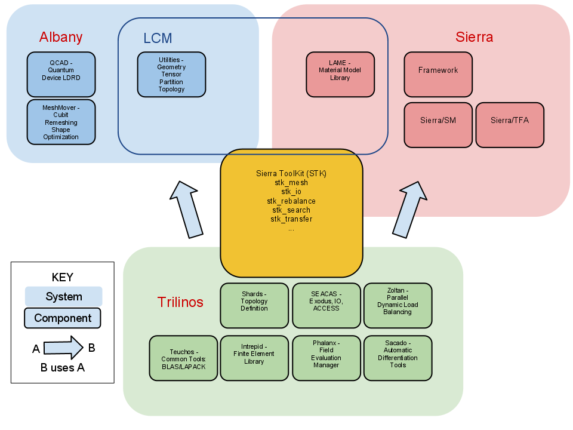

Laboratory for Computational Mechanics
The Laboratory for Computational Mechanics (LCM) is an R&D effort built on the Albany code base. The purpose of the LCM is to develop a computational mechanics research environment that facilitates collaboration and impacts the Sandia production analysis codes.Getting Started
Development within the LCM environment requires an installation of Trilinos and a few TPLs. To facilitate a common environment setup, there are a couple of build scripts in the Albany repository that fetch and build Trilinos and the required TPLs. They can be found at the location Albany/src/LCM/doc/*_build.sh. These scripts build a recent version of the GCC compiler, including its dependencies, and proceed to fetch and build current version of NetCDF, Boost, CMake, and OpenMPI. Prereq's for the script are an installation of git and the standard BLAS and LAPACK libraries. If everything goes smoothly, you will have a clean installation of Trilinos and Albany's tests will pass.Fracture and Failure
The focus of the LCM is on developing mechanics algorithms related to modeling fracture and failure of materials. For more information, see the solid mechanics collaboration website.Multiphysics
The design of Albany allows for the rapid prototyping of multiphysics systems, as evident by a number of ongoing efforts underneath the LCM umbrella. Each of these efforts involves the solution of multiple balance laws with coupled solution fields, in the context of fully nonlinear, finite deformation continuum mechanics. A few represented examples will be discussed.Thermomechanics
The treatment of thermomechanics includes a formulation of the balance of energy, in temperature form, coupled with the balance of linear momentum. Implicit, quasi-static time integration applies to the equilibrium equations, with transient heat conduction stemming from the balance of energy. Finite deformation kinematics leads to a description of physics in the reference configuration, with temperature dependent material parameters and constitutive response, including J2 inelasticity. Finally, mechanical source terms are present in the energy equation describing structural elastic and inelastic heating as well as internal dissipation. |
Poromechancis
Hydrogen Transport
Organization and Project Management
The LCM project leverages existing research projects in the areas of computational mechanics. The stated objective is to provide an environment whereby a researcher can focus on the new idea and/or algorithm, and not be responsible for re-implementing functionality required for simulation, but outside the scope of the research. For example, existing parsing, I/O, parallel communication functionality can be leveraged and reused seamlessly. A schmatic of the operational space of the LCM project can be seen in the figure below.|  |